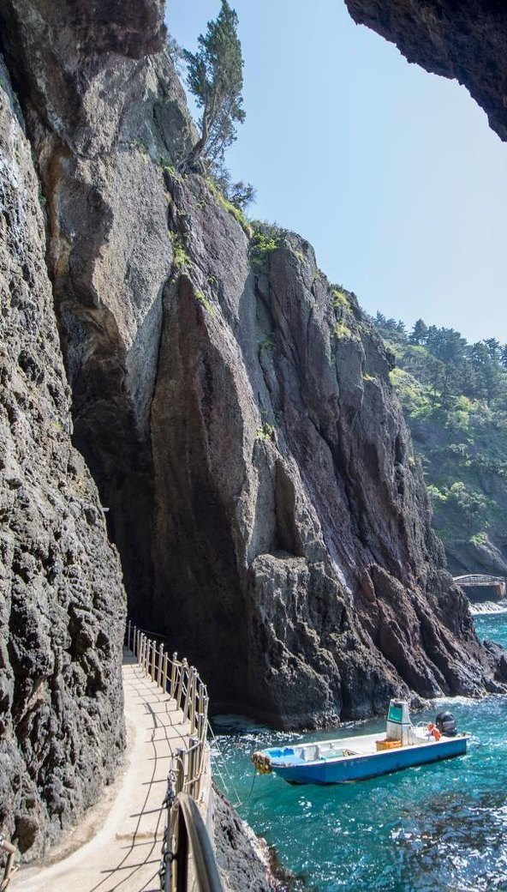
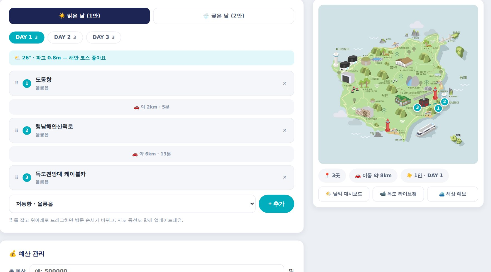

기간 · 동행 · 테마만 알려주시면
1분 만에 나만의 울릉도 코스가 완성됩니다
배 시간에 맞춘 현실적인 동선으로 짰습니다. 취향에 따라 골라 조합해 보세요
울릉도의 정수를 모두 담은 대표 코스. 첫날은 도동 주변, 둘째 날은 섬 북쪽, 셋째 날은 서쪽으로 이동하며 일주합니다
 12345678
12345678번호는 방문 순서예요. 실제 동선은 배편·날씨에 따라 달라질 수 있어요
 여유롭게
여유롭게2박 3일 일주 코스에 독도 방문과 성인봉을 더한 완전판. 기상 변수에 대비할 예비 시간도 확보됩니다
12345678번호는 방문 순서예요. 실제 동선은 배편·날씨에 따라 달라질 수 있어요
 짧고 굵게
짧고 굵게시간이 없어도 울릉도의 진한 인상을 남기고 싶은 분들께. 도동 주변에서 모든 걸 해결하는 코스입니다
1234번호는 방문 순서예요. 실제 동선은 배편·날씨에 따라 달라질 수 있어요

여유롭게배 시간 전후로 여유가 생겼을 때. 무리하지 않고 걷고, 마시고, 바라보는 코스입니다
123번호는 방문 순서예요. 실제 동선은 배편·날씨에 따라 달라질 수 있어요
AI가 짜준 코스를 그대로 따라가도 좋지만, 나만의 속도로 조율하고 싶은 분들을 위한 여행 워크스페이스 울릉로그를 준비했어요

화면 미리보기 · 눌러서 바로 사용해 보세요